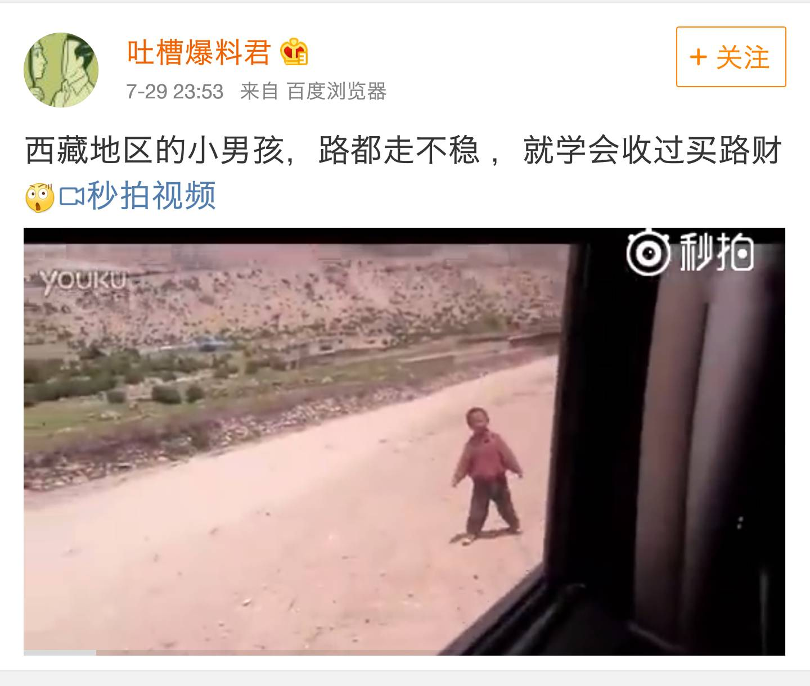

直接物质帮助好吗?--藏区儿童拦人要钱要物现象
|
说起农村孩子现在最需要什么，大家可能马上想到的就是钱，有钱就可以实现很多愿望。而很多人也基于这种观念，毫不犹豫地为农村孩子做了自认为应该做的，那就是给他们大量的金钱和物质资助。 的确，钱和物质确实能为贫困家庭的孩子解决一些眼前困难，但我们总以这种意识去帮助农村的孩子，长期发展的结果会怎么样呢？下面通过两个广泛而真实的事例来揭示一些让人忽视的现象。

"藏区儿童拦车要钱"
近几年，随着前往藏区旅游的人员的增多，不管是自驾前往，还是骑行或徒步，大家都会遇到一个不容忽视问题：藏区儿童拦车、拦人要钱要物，而且这样的情况有愈演愈烈之势。现在的情况是：给糖收，给学习用品收，给钱收，就是不走。强行索取无底洞的感觉。下面通过一位网友的亲身经历和感受（网络摘录），来让大家一起思索一下，我们到底该用什么样的方式表达爱......
" " 别再给山区孩子糖果
(一位骑行爱好者自述)
我四次进藏，前后呆了一年时间，今年7月与朋友骑行新藏线。在路上我发现当年天真懵懂的偏远山区孩子，如今已经变的如同流氓一般，颇感心痛、无奈。
很多来西藏旅行旅行的人都会给孩子们带上糖果、铅笔、本子这些礼物。这些初衷固然是好的，但是随着游客的逐年增加，“礼物”却慢慢变了性质。 在这条骑行路线上，我最害怕的就是见到孩子。他们一见有车过来就不知道从哪冲到路上，伸手说“hello”然后索要礼物。如果你不停车或者不给他们就会大声叫骂，更有甚者拿石块扔你。有几次孩子直接栏到车前，差点被撞到。 ，你为什么不停车，为什么不给他们？ 这种事遇见的太频繁了，一天能遇见数十个孩子，我给不过来。而且长线确实没有办法带礼物，连自己的中午的食物也只有几块花生糖，巧克力而已。 这绝不是个体现象，是群体性的。孩子们三五成群，看见游客就冲过来。在这些天真的孩童心理“hello”似乎是一个魔法，一说出来就会有礼物，如果没有他们就会觉得愤怒，会叫骂。 我们需要反思，礼物究竟是帮助了他们还是害了他们？这种扭曲的价值观是如何出现的？ 曾经在坐车过一个检查站的时候，遇见一个孩子从车窗问我要铅笔，我告诉他我真的没有铅笔，他立刻就用藏语大声叫嚷起来。他缺铅笔吗？我看未必，他当时手上拿着三四支铅笔和两个本子。 在拉萨还有这样一个现象，有很多人起乞讨的人，而这些人中很多都是孩子。我遇见过一个穿校服的孩子，过来问我要钱。我就问他你要钱做什么？他说，我饿了没饭吃。我说，我不给你钱，但是我带你去吃饭。结果那个孩子就立刻走掉了。 后来我才知道，乞讨似乎已经成一个风俗了。曾经磕长头的人依靠乞讨朝圣者已经寥寥无几，更多的竟是以乞讨为生的人，和靠乞讨赚取零用钱的孩子。 我曾问过拉萨市妇联的主席达娃，你们难道不管这些孩子？达娃说，你知道他们赚多少吗？不比你少。而且已经成为一个传统了，没有钱就问别人要。我也曾经问过拉萨市公安局侦查科的人，这些孩子会不会是被人利用拐卖来乞讨的。他们告诉我，不是，曾经出台过热线只要有人在街上乞讨就拨打电话，然后给予救助，但是收效寥寥。 随着我在拉萨呆的时间越来越长，我才知道，他们乞讨不过是要钱这么一件简单的事情而已，并不是因为有多么困难。 好心的礼物，好心的施舍我们是不是真的做对了？这些究竟是给他们的帮助更大还是伤害更大？国家慷慨援助，游客的爱心施舍就造就了一个乞讨者如此普遍的拉萨吗？我们确实得好好的思考一番了 如果你真的想帮助农村孩子,欢迎参与自然之手支教项目 欢迎参加 返回主页 |